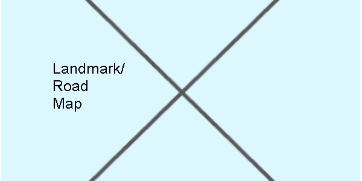

About the Island

Taniti is a small, tropical island in the Pacific. While the island has an area of less than 500 square miles, the terrain is varied and includes both sandy and rocky beaches, a small but safe harbor, lush tropical rainforests, and a mountainous interior that includes a small, active volcano. Taniti has an indigenous population of about 20,000. Until a recent increase in tourism, most the Tanitian economy was dominated by fishing or agriculture.

Frequently Asked Questions
What power adapters do I need to bring for my appliances?
Power outlets are 120 volts (the same as in the United States).
How late do the bars or supermarkets sell alcohol?
Alcohol is not allowed to be served or sold between the hours of midnight and 9:00 a.m.
What is the drinking age on the island?
The drinking age on Taniti is 18 and the drinking age is not strictly enforced.
Is English the primary language of Taniti?
Many younger Tanitians speak fluent English. Very little English is spoken in rural areas, especially by the older residents.
Does Taniti have medical care facilites?
There is one hospital and several clinics. The hospital has many multilingual employees.
Is Taniti considered a safe place?
Violent crime is very rare on Taniti, but as tourism increases, there are more reports of pickpocketing and other petty crimes.
What should I know before planning my trip to Taniti?
Taniti enjoys a large number of national holidays, and many tourist attractions and restaurants will be closed on holidays, so visitors should plan accordingly.
Do you accept [currency type]?
Taniti uses the U.S. dollar as its currency, but many businesses will also accept euros and yen. Several banks facilitate currency exchange, and many businesses accept major credit cards.
Contact Us
Taniti
Taniti.mail@email.com
1234 Governor Bldg.
Taniti, Franch Polynesia
12345
M - F: 7AM - 4PM
Tel: +0 (123) 123 - 4567